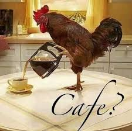

CAFÉ BOM DAQUELES QUE DA GASTRITE

-
- Aqueça a água. Para saber qual é o ponto ideal para desligar o fogo,
basta observar: é no quando se formam pequenas bolhas (de
90ºC a 92ºC) e coloque o açúcar (opcional);
-
- Passe o coador de pano em água quente e descarte a água usada;
- - Adicione o pó de café no coador;
-
- Inicie colocando a água quente no centro do coador.
Faça movimento circulares,
pois o processo auxilia a misturar o pó de café. Permita que
a água escoe completamente.
DICAS
-
- Se puder usar mineral, é melhor, mas água filtrada funciona
perfeitamente
- - Evite a água da torneira devido ao excesso de cloro
-
- Colocar um pouco de água quente na garrafa mantém o café ainda mais
quente.